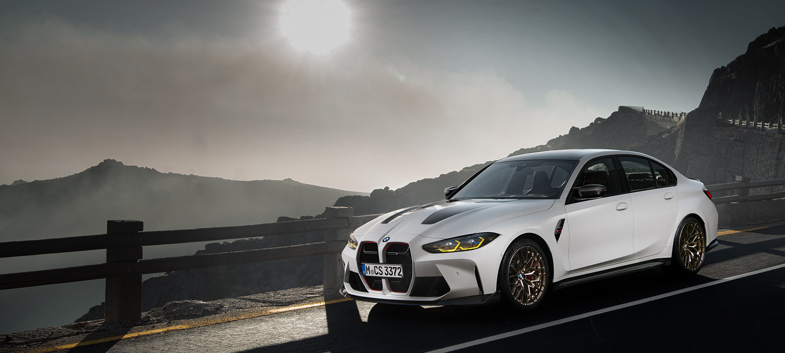
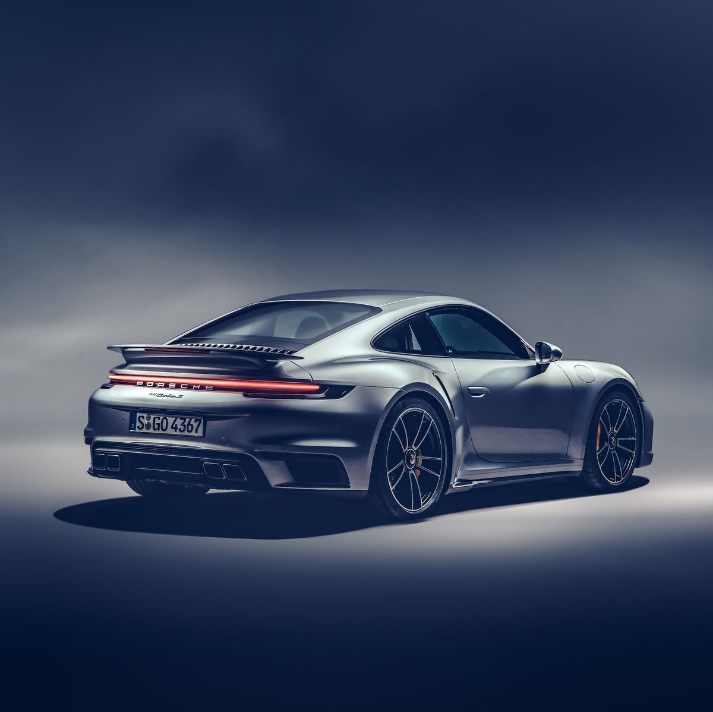

BMW M3
- Special Features:
- 3.0-liter inline-six engine with up to 503 horsepower
- Carbon fiber roof and body panels for weight reduction
- Adaptive M suspension with electronically controlled dampers
The BMW M3 is a high-performance sports car that is known for its agility and power. With its lightweight construction and advanced suspension system, it delivers an exciting driving experience that is hard to match. The car's sleek, aerodynamic design also helps to improve its performance, making it a top choice for car enthusiasts around the world.
Porsche 911
- Special Features:
- 4.0-liter flat-six engine with up to 502 horsepower
- Iconic design with rear-engine layout
- Porsche Active Suspension Management for a comfortable ride
The Porsche 911 is one of the most recognizable sports cars on the road today, thanks to its iconic design and high performance capabilities. With its powerful engine and advanced suspension system, it delivers an exhilarating driving experience that is unmatched by most other cars in its class. Whether you're cruising along the highway or tearing up the track, the 911 is a car that delivers in every way.
Nissan Skyline

- Special Features:
- 2.6-liter twin-turbo inline-six engine with up to 276 horsepower
- Advanced all-wheel drive system for superior traction
- Attractive and aggressive styling
The Nissan Skyline is a classic sports car that is known for its powerful engine and advanced all-wheel drive system. With its aggressive styling and sleek design, it